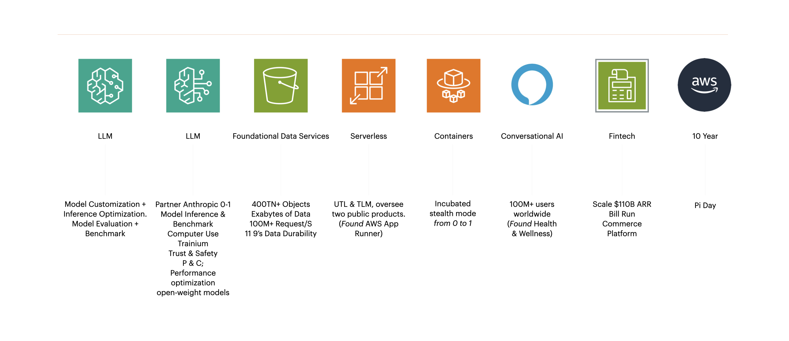

Project Deliverables

- LLM
- FDS
- AWS App Runner
- AWS Fargate
- Conversational AI + Healthcare
- Commerce Platform
- Telecommunication
- Statistics
2025
-
LLM
-
LLMOpenAI open weight models available on AWS (Forge)AWS Bedrock
-
LLMClaude 3.7 SonnetAI/ML Services & Infrastructure OrgClaude’s extended thinking Claude 3.7 Sonnet and Claude Code AWS News Blog | Anthropic’s Claude 3.7 Sonnet hybrid reasoning model is now available in Amazon Bedrock What's New Amazon News
-
LLMAmazon Bedrock launches with Claude 3.5 Sonnet in the AWS Top Secret cloudAI/ML Services & Infrastructure Org
2024
-
re:InventBig Technology | AWS CEO Matt Garman Talks Amazon’s Big Bets in AI Chips, Reasoning, and Nuclear Energy The Claude in Amazon Bedrock Course Live updates from AWS re:Invent 2024 AWS News Blog re:Invent Recap AWS re:Invent 2024 - Andy Jassy shares his final thoughts from re:Invent AWS re:Invent 2024 - Generative AI in action: From prototype to production (AIM276) AWS re:Invent 2024 - Keynote with Dr. Swami Sivasubramanian AWS re:Invent 2024 - Compute innovation for any application, anywhere (CMP215) AWS re:Invent 2024 - CEO Keynote with Matt Garman AWS re:Invent 2024 - Monday Night Live with Peter DeSantis AWS Machine Learning Blog | Advancing AI trust with new responsible AI tools, capabilities, and resources AWS Machine Learning Blog Containers The future of Kubernetes on AWS (KUB201) SiliconANGLE theCUBE | Exclusive: Amazon CEO Andy Jassy reveals AWS’ strategy for building the enterprise AI platform CMSWIRE | AWS CEO Q&A: Matt Garman on Amazon’s $4B Anthropic Bet and AI Strategy Swami Sivasubramanian post December 06 2024 Swami Sivasubramanian post December 05 2024 Swami Sivasubramanian post December 04 2024 Swami Sivasubramanian post December 03 2024 Matt Garman post December 02 2024 Swami Sivasubramanian post December 02 2024 John Furrier post December 01 2024 Matt Garman post December 01 2024 SiliconANGLE theCUBE | AWS re:Invent 2024: CEO Matt Garman unveils the future of cloud with generative AI and agentic workflows Swami Sivasubramanian post December 01 2024 SiliconANGLE theCUBE | Inside the AI revolution: Swami Sivasubramanian on generative AI, agentic systems and AWS’ vision Baskar Sridharan post November 30 2024 AIM276-INT
-
LLMAmazon Bedrock announces preview of prompt cachingAI/ML Services & Infrastructure OrgAWS News Blog What's New AWS Machine Learning Blog | Effectively use prompt caching on Amazon Bedrock
-
LLMIntroducing latency-optimized inference for foundation models in Amazon BedrockAI/ML Services & Infrastructure OrgAWS re:Invent 2024 - AWS Trainium2 for breakthrough AI training and inference performance-CMP333-NEW Business Insider | Amazon's AI chip executive tells BI why Nvidia is not a competitor, how Anthropic helps, and what AMD needs AWS Announces New Data Center Components to Support AI Innovation and Further Improve Energy Efficiency SemiAnalysis | Amazon’s AI Self Sufficiency | Trainium2 Architecture & Networking Bill Jia post AWS Partners LIVE! at re:Invent 2024 | Day 1 Jason Clinton, CISO Anthropic BUSINESS WIRE | AWS Trainium2 Instances Now Generally Available Claude 3.5 Haiku on AWS Trainium2 and model distillation in Amazon Bedrock What's New
-
LLMAnthropic names AWS its primary training partner and will use AWS Trainium to train and deploy its largest foundation models; Amazon to invest additional $4 billion in Anthropic.AI/ML Services & Infrastructure Org
-
Projectversary
-
LLMAnthropic and Palantir Partner to Bring Claude AI Models to AWS for U.S. Government Intelligence and Defense OperationsAI/ML Services & Infrastructure OrgPalantir Investor Relations TechCrunch BUSINESS WIRE | Anthropic and Palantir Partner to Bring Claude AI Models to AWS for U.S. Government Intelligence and Defense Operations
-
LLMClaude 3.5 Haiku (GA) on Amazon Bedrock. (Tepui)AI/ML Services & Infrastructure OrgAWS News Blog About Amazon Blog What's New Adam Seligman + Anthropic Partnership Video Swami Sivasubramanian post Vasi Philomin post Artificial Analysis | Claude 3.5 Haiku: API Provider Benchmarking & AnalysisView EndorsementsSVP, L1111/04/2024 8:28 PMVP, AI and Data, L1011/04/2024 8:15 PMVP, L1011/04/2024 7:16 PMVP, L1011/04/2024 6:48 PMVP/Distinguished Engineer, L1011/04/2024 6:36 PMSr. Principal, ML Engineering, L811/04/2024 6:22 PM
-
Projectversary10 Years of Serverless with AWS Lambda and Amazon ECS10 Years of Serverless with AWS Lambda and Amazon ECS Serverless Vision | Move Faster from Idea to Business Value 10 years of Lambda & ECS! | Serverless Office Hours Serverless moments with AWS Lambda and Amazon ECS AWS Lambda: A Decade of Transformation [Interview] Holly Mesrobian, AWS VP Serverless Compute [Blog] AWS Lambda turns 10: A rare look at the doc that started it, Werner Vogels, VP & CTO at Amazon [Interview] The 10-year journey of AWS Lambda: How our serverless vision shaped the future, Werner Vogels, VP & CTO at Amazon [Blog] Ten Years of AWS Lambda, Marc Brooker, VP & Distinguished Engineer at AWS AWS News Blog | AWS Lambda turns ten – looking back and looking ahead AWS News Blog | Celebrating 10 Years of Amazon ECS: Powering a Decade of Containerized Innovation
-
LLMUpgraded Claude 3.5 Sonnet model from Anthropic introduces groundbreaking computer use capability. (Firefly)AI/ML Services & Infrastructure OrgDeveloping a computer use model Introducing computer use, a new Claude 3.5 Sonnet, and Claude 3.5 Haiku Amazon Bedrock introduces an upgraded Claude 3.5 Sonnet, Anthropic’s most intelligent AI model to date What's New AWS News Blog Andy Jassy post Matt Garman post Swami Sivasubramanian post Vasi Philomin post Computer use, Claude 3.5, and the race for model-to-app supremacy AWS DevOps & Developer Productivity Blog Deepak Singh post Srini Iragavarapu post Claude 3.5 Sonnet on GitHub Copilot GitHub Blog / News & insights / Product Investor Relations | Amazon.com Announces Third Quarter Results Artificial Analysis | Claude 3.5 Sonnet (Oct.): API Provider Benchmarking & Analysis Dario Amodei: Anthropic CEO on Claude, AGI & the Future of AI & Humanity | Lex Fridman Podcast #452 How Amazon rebuilt Alexa with generative AI Claude and Alexa+
-
ProjectversaryBedrock 1 Year Anniversary Celebration/HHAI/ML Services & Infrastructure Org
-
LLMAmazon Bedrock offers select FMs for batch inference at 50% of on-demand inference priceAI/ML Services & Infrastructure Org, “Cousin” Team Engagement
-
LLMClaude 3.5 Sonnet and Claude 3 Haiku now available in more regionsAI/ML Services & Infrastructure Org
-
LLMClaude 3.5 Sonnet (Dove)AI/ML Services & Infrastructure OrgAnthropic News Amazon Bedrock introduces Anthropic's Claude 3.5 Sonnet to customers, their most powerful AI model to date AWS News Blog
-
LLMAmazon Bedrock now available in the (London), (São Paulo), and Canada (Central) regionsAI/ML Services & Infrastructure Org
-
ProjectversaryAmazon 30th Anniversary
-
ProjectversaryKubernetes is turning 10!SILICON VALLEY, CA + VARIOUS WORLDWIDE LOCATIONSKuberTENes Birthday Bash 10 Years of Kubernetes Why is Kubernetes so special? BY SARAHNOVOTNY The Technical History of Kubernetes
-
LLMClaude 3 Sonnet and Haiku now available in Amazon Bedrock in the Europe (Frankfurt) regionAI/ML Services & Infrastructure Org
-
LLMAnthropic’s Claude 3 Opus model is now available on Amazon Bedrock (Teal)AI/ML Services & Infrastructure OrgAmazon News AWS News Blog Andy Jassy post Adam Selipsky post Swami Sivasubramanian post SiliconANGLE Artificial Analysis | Claude 3 Opus: API Provider Benchmarking & Analysis Amazon Q1 Earnings - Bedrock mentions Amazon Q GA
-
ProjectversaryAWS Pi Day 2024: Use your data to power generative AIAmazon
2023
-
re:InventWelcome to a New Era of Building in the Cloud with Generative AI on AWSFDSDive deep on Amazon S3Foundational Data Services (FDS)Recording STG314 Recording AIM250-INT Recording STG227 USENIX FAST '23 Building and operating a pretty big storage system called S3 Diving Deep on S3 ConsistencyProjectversaryRocksDB turning 10!Tweet Linkedin Post by Dhruba Borthakur, Co-founder and CTO at Rockset (acquired by OpenAI) #IndexConf 2023 - RocksDB 10 Year Anniversary PanelProjectversaryServerlessAWS App Runner now supports HTTP to HTTPS redirectDevelopers, Events, Containers and Serverless (DECS)
2022
-
re:InventServerlessProjectversaryServerlessAWS App Runner now supports privately accessible services within Amazon VPCDevelopers, Events, Containers and Serverless (DECS)ServerlessAWS App Runner now supports Amazon Route 53 alias record for root domain nameDevelopers, Events, Containers and Serverless (DECS)ServerlessAWS App Runner launches AWS X-Ray supportAWS Elastic ContainersServerlessAWS App Runner adds support for Amazon VPCAWS Elastic Containers
2021
-
AWS Announces General Availability of AWS App Runner (Project Code Name: Fusion)Containers, Linux, and App Networking
2020
-
Conversational AI
2019
-
ProjectversaryAlexa at five: Looking back, looking forwardAmazonConversational AINew ways to manage your medications at home using AlexaAmazon AlexaAmazon News Forbes CNBC Amazon is building a ‘health & wellness’ team within Alexa as it aims to upend health care Amazon nabs a top Box exec in health as it goes after the medical industryCommerce PlatformManagement Data Store (MDB) Disaggregation in Commercial Regions (Ops Win)AWS PaymentsBlogpost The New Stack | Relational to NoSQL at Enterprise Scale: Lessons from Amazon Cost savings from MDB teardown are estimated 8.5 million/year. Reduced the variance in P99 latency of invoice creation by around 10%.
2018
-
Commerce PlatformEurope, Middle East, and Africa (EMEA) Configurable Seller of Record (CSOR)AWS PaymentsCommerce PlatformAll AWS Services GDPR readyAWS PaymentsAWS Security Blog Tips for Success: GDPR Lessons Learned The AWS Shared Responsibility Model and GDPR AWS and the General Data Protection Regulation (GDPR) AWS Announces Cloud Infrastructure Services Providers in Europe (CISPE) Membership and Compliance with First-Ever Code of Conduct for Data Protection in the CloudCommerce PlatformFinX 10x scalingAWS PaymentsOver 2017, FinX improved bill run throughput by 263%. Cut down the time of invoice creation and revenue reporting by 64%.
2017
-
Commerce Platform
2016
-
Commerce PlatformOnboardCELEBRATING THE 10TH ANNIVERSARY OF AMAZON WEB SERVICESAmazon
2014
-
ProjectversaryComputer Science at UMASS to celebrate its 50th anniversary
2013
-
-
-